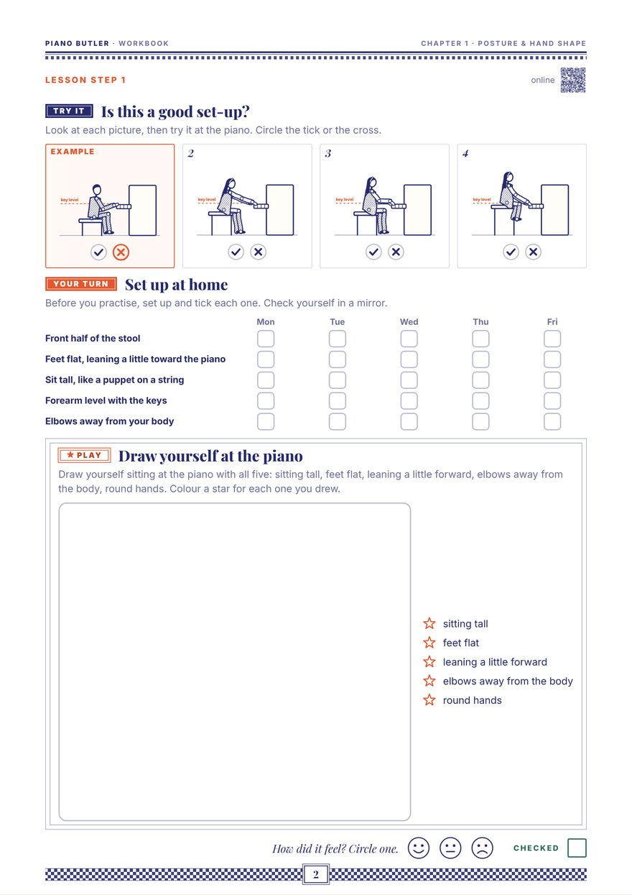

Before the first note: how to sit, and how to hold the hand. Get these two right and every note after them is easier, and kinder to the body.
Two things to set: how high the stool is, and how far it is from the keys. Then sit tall, like a puppet on a string.
The forearm slopes up to the keys and the shoulders hunch. Raise the stool.
The forearm slopes down onto the keys and the feet swing. Lower the stool until the forearm is level.
The elbows are squashed in against the body. Slide the stool back a little.
The arms reach out ahead of the body. Slide the stool closer.
The fingertips stay connected to the piano, but the whole arm does the work: from above, it leads the hand and the fingers, with the elbows free and away from the body. Even while a finger presses a key, the whole arm stays free. Six moves, in this order, from the big parts of the body to the small ones: each one gets the arm ready for the next. A few minutes at the start of practice.
Flop forward and let both arms hang heavy. Shake them loose, then float the hands up and set them gently on the keys.
Check the elbows are free, not stuck to the body: let them float out like wings, then back. Stop in the middle, a fist from the body.
Now the whole arm: skate along the keys. The round hand rides on the arm to the next group of keys. The fingers ride, they don't walk.
Lift the whole arm and let it drop into a key on finger 3: firm tip, soft wrist, a round sound.
The knuckles are a bridge a little car can drive over. Press one key slowly and hold for three: the bridge stays up.
As the key goes down, a balloon lifts the wrist straight back up to level. The wrist never sinks, and the fingertip stays on the key.
Let the arms hang, then lift the hands as if holding a small ball. That round shape is the one to keep on the keys.
The thumb seen from the front of the keyboard: it bends in, and the side of its tip touches the key.
The key is played with the soft middle of the finger. Try: hold a small ball, or a mandarin, and put that round shape on the keys.
The bridge has fallen in, lower than the wrist. Try: the knuckle bridge warm-up, with the knuckles staying up.
The last joint bends backwards as the finger plays. Notice it: play slowly on the tip, press down and hold, and feel it stay firm, like a little pillar.
The wrist sinks below the keys and the hand has to push up. Try: the wrist balloon, back up to level after each key.
The wrist hunches up and the fingers poke straight down. Try: let it sink until it's level with the forearm.
Every finger has a number, 1 to 5, starting from the thumb. It's the same on both hands, so both thumbs are 1 and both little fingers are 5. Teachers say "put finger 2 on D" all the time, so the numbers need to be automatic before reading fingering on the page.
The mirror game: hold both hands up and wiggle each finger as you say its number. Then someone calls "Right hand, 3!" and you wiggle it. Swap, and you call.
Now put it together: sit well, make a round hand, and play. Start small: one note, then two, three, four, and all five. From key to key the hand draws a little rainbow: relaxed, never squeezed tight, the whole hand helping. One circle is one steady beat; an empty dashed circle holds the note for one more beat.
Right hand first, then left hand. Move on to the next tune only when the hand stays round.
Before playing, every time, for every student, not only beginners.

Tick or cross four pictures of sitting at the piano, tick your set-up at home for five days, then draw yourself at the piano and colour a star for each thing you drew. One A4 page.
Print this pageThe whole chapter: Lesson Book + WorkbookMove the stool until every check turns green, do the six warm-ups with a moving picture of each, play the finger walks along with a steady beat, and play "Which finger?" on both hands.
Open the lessonHigh enough that the forearm is level with the keys. If the feet then don't reach the floor, put a footstool or a sturdy box under them rather than lowering the stool.
Neither: level with the forearm, and free, as if on a roller. After each key goes down, it comes straight back up to level instead of sinking.
Close enough that the elbows sit just in front of the body, away from your sides by about a fist. Squashed elbows mean too close; arms reaching out mean too far.